Welkom op mijn webside!
Met trots presenteer ik u mijn nieuwe webside!
Mijn naam is Natascha, 38 jaar en woonachtig in Lelystad.
Ik volg de cursus webdesign bij de NHA. Hier leer ik de basis om geweldige websides te creëren.
Neem rustig een kijkje en neem bij vragen of een leuke vacature vooral contact met mij op.
 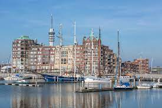
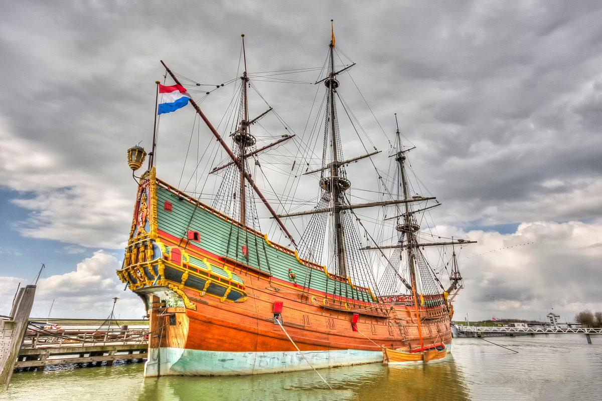
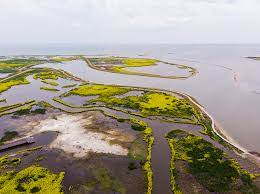
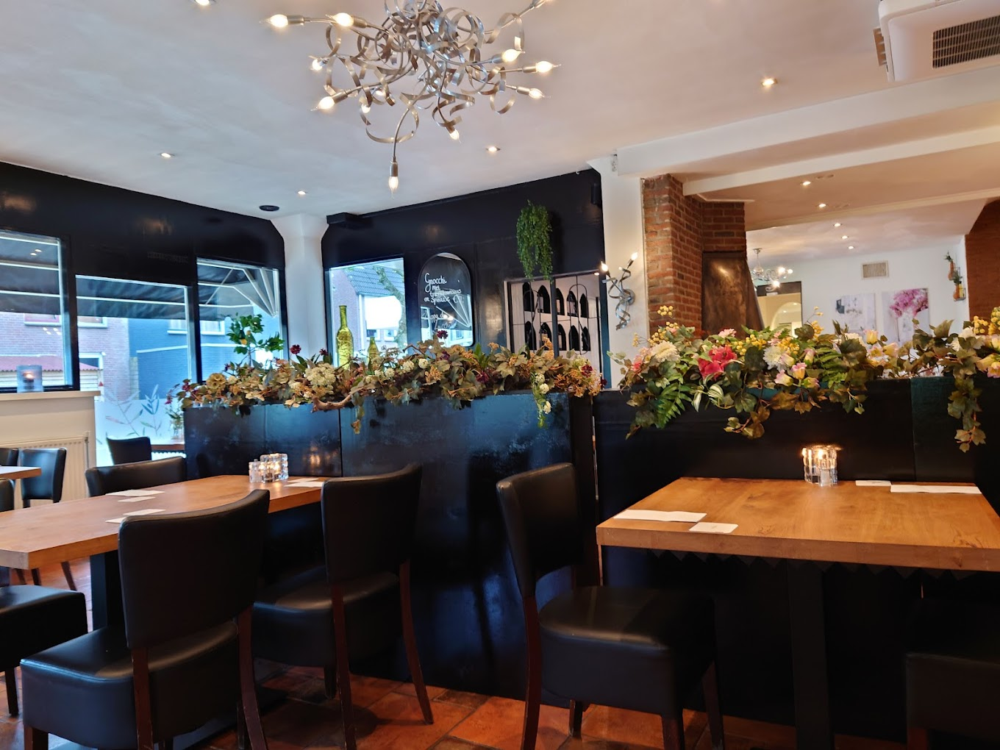
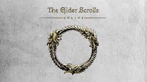
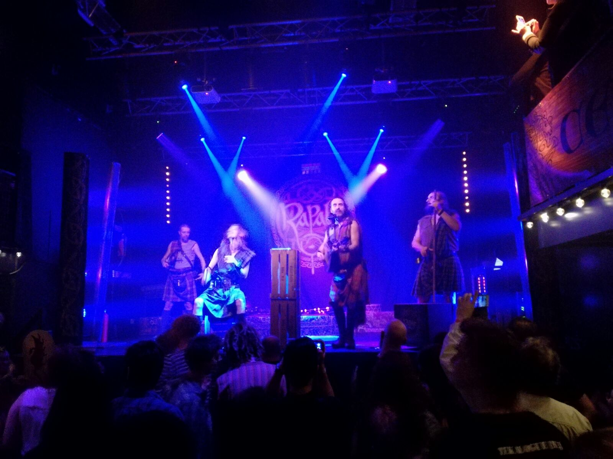
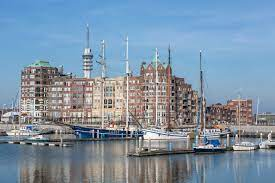
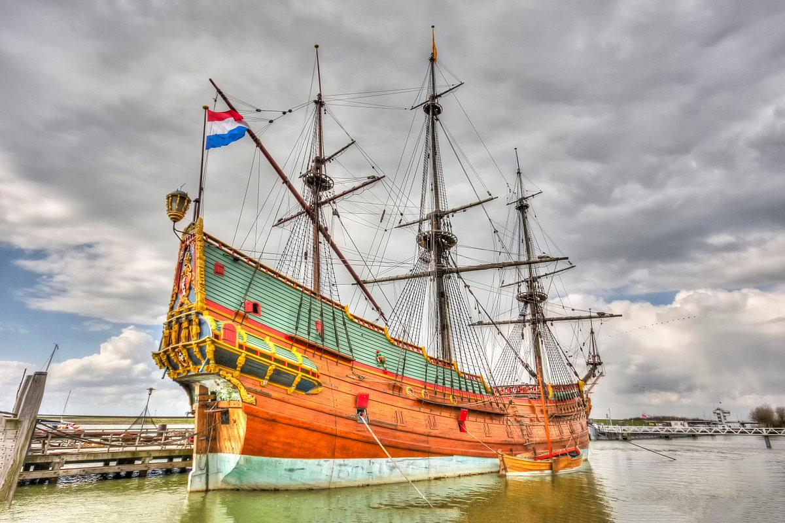
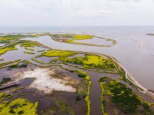
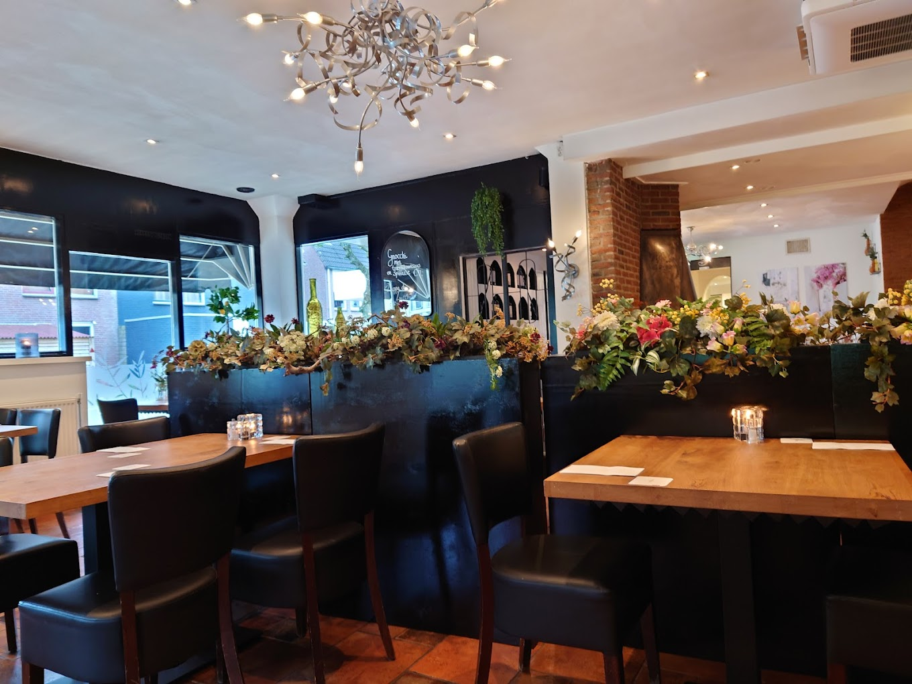
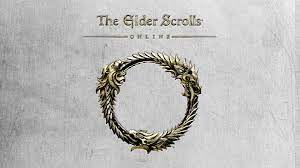
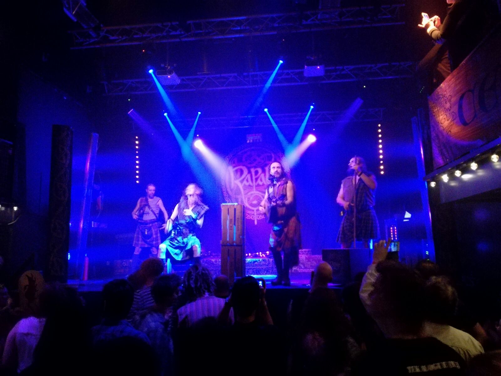